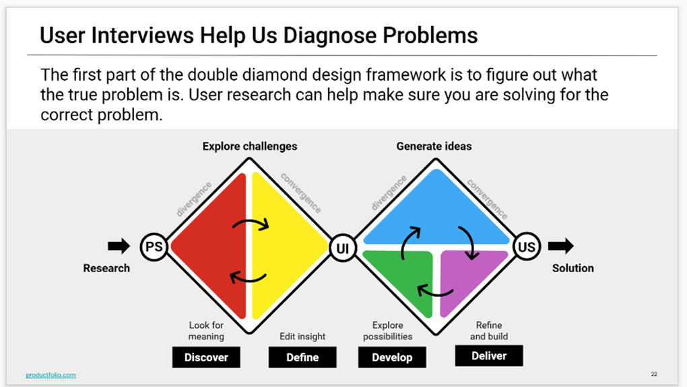
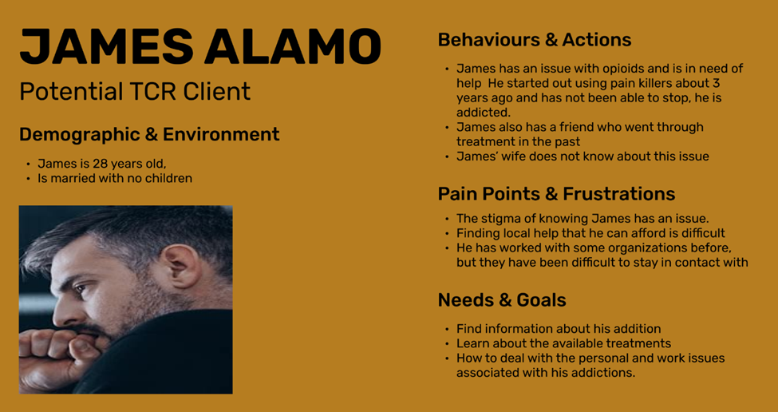

The Project Proposal is a preliminary project document that defines the following for the TCRP web site redesign:
The purpose of research goals and objectives are to define what your research project intends to accomplish.
Group D defined following research goals and objectives for the TCRP web site redesign:The redesign team used these goals and objectives throughout the project, including the creation of our interviews and surveys.
The redesign team used the research goals and objectives in formulating both the interview and survey questions. The questions were designed to support one of the goals or objectives.
The proto persona is a fictionalized character who represents a typical user of the TCRP web site. The proto persona is an initial version and evolves into a user persona in the Ideation and Definition phase. The final version is the User Persona and is defined in the User Persona section.
